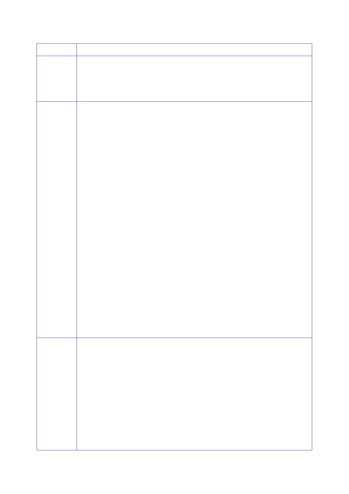

The Report
of the Iraq Inquiry
Country
France
(continued)
Mexico
Ireland
Extracts
from Explanations of Vote (EOV)
“It is
against that backdrop, and through collective responsibility, that
the efforts of
the
international community to disarm Iraq should be carried out. War
can only be the
last
recourse. The rules of the game spelled out by the Security Council
are clear and
demanding
and require the unfailing co‑operation of Iraqi leaders. If Iraq
wants to avoid
confrontation
it must understand that this is its last opportunity.”
“The
resolution just adopted is the result of negotiations in which
those who called for
automatic
recourse to the use of force agreed to give Iraq one last chance to
voluntarily,
immediately
and unconditionally comply with Security Council resolutions …
[T]his
resolution
also constitutes progress, as it eliminates the concept of
automaticity in the use
of force in
response to a serious violation without the explicit agreement of
the Council.
“We welcome
the fact that the two‑stage approach has been accepted …
[A]ny
decision in
response to possible material breach by Iraq … will have to be
taken on the
basis of
two prerequisites.
“… The
first stage would entail a credible process to evaluate Iraq’s true
military
capability
and its intentions to use its weapons or the ability of terrorist
groups to have
access to
them. The second … would entail the agreement of the Security
Council and
other
States involved on the measures to be adopted if the evaluation
process detects
a threat to
international peace and security.
…
“… We
emphasise the importance that the Security Council decisions taken
in this
connection
must continue to comply with the principles of the Charter and
international
law on the
basis of objectively verifiable facts.
“We
reiterate the belief reflected in the agreed text that the
possibility of the use of force
is valid
only as a last resort, with prior explicit authorisation required
from the Security
Council.
“… the
resolution stipulates that should Iraq fail to comply, it will be
the inspectors who
will report
to the Council. This multilateral body will then determine the
nature of the
failure to
comply, judge whether international peace and security have been
imperilled,
and then
decide what is appropriate under the … Charter.”
“… we
welcome the assurances given by the sponsors that their purpose in
presenting
this
resolution was to achieve disarmament through inspections and not
to establish a
basis for
the use of military force …
…
“… the
resolution … offers the most likely means of securing Iraq’s
voluntary
compliance
… avoiding a military conflict and preserving the primary
responsibility of
the
Security Council for the maintenance of international peace and
security …
“The
resolution provides for a clear, sequential process whereby …
UNMOVIC or the
… IAEA will
give the Council its assessment of any material breach or alleged
material
breach of
Iraq’s obligations … The matter will then be fully examined by the
Security
Council
itself.
348